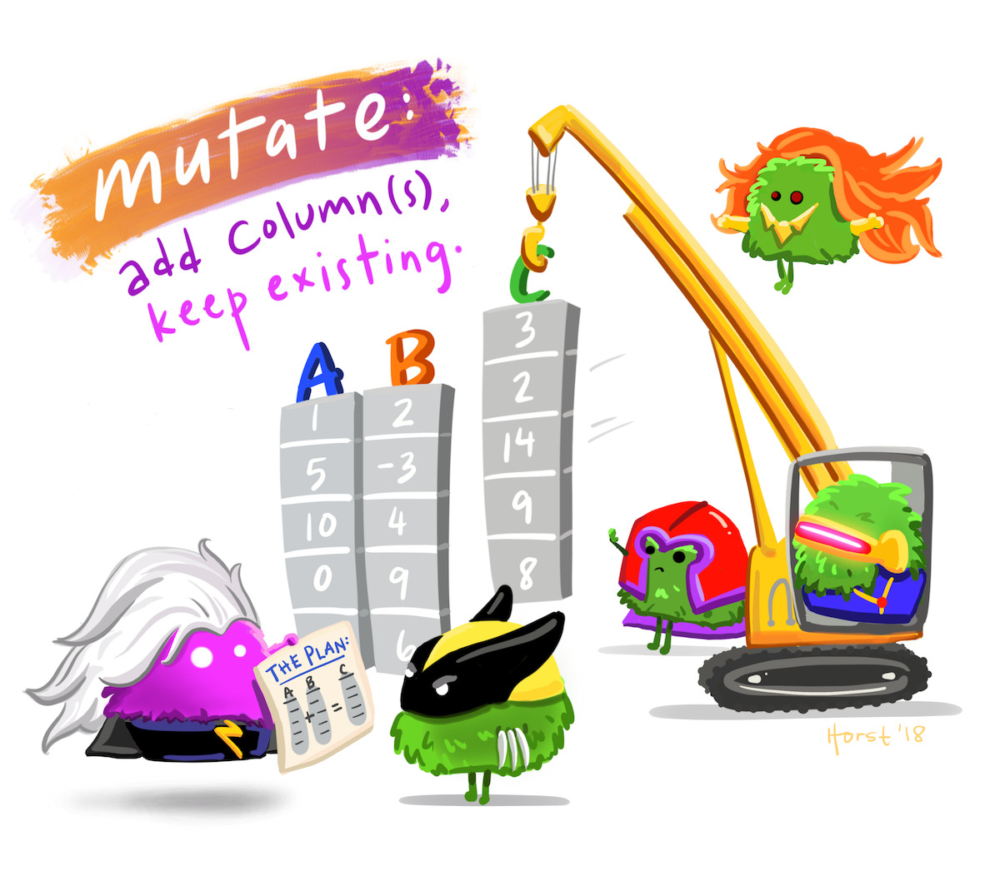

Lab 2: Minnesota tree growth
Manipulating and summarizing data with dplyr
Intro to dplyr:
library(dplyr)
dplyr is an R package that provides a set of functions designed for data manipulation and transformation, making it easier to work with data frames (or tibbles). It is part of the tidyverse ecosystem and is widely used for data wrangling tasks such as filtering, selecting, summarizing, and mutating data.
Key Features of dplyr
- Pipe-friendly (
%>%/|>): Works seamlessly with the pipe operators. - Efficient: Built on top of Rcpp for fast performance.
- Consistent Grammar:Uses a consistent set of verbs for data manipulation.
The primary verbs can be organized into three categories based on the component of the dataset they most commonly operate on:
Rows:
filter(): subset rows based on column values.slice(): subset rows based on index.arrange(): change row order.
Columns:
select(): subset columns based on name or characteristics.mutate(): change column values or create new columns.rename(): change column name.
Groups of rows:
summarize(): collapse multiple rows into a single row.n()/n_distint(): count group membership
Dataset
glimpse()provides a compact and easy-to-read summary of a data.frame. It is similar tostr(), but with a more readable format. Its key features are that it:
We will use glimpse to report on our outputs in each question through this lab!
Piping
The pipe operator (|>) in R is used to streamline code by passing the result of one function directly into the next function as the first argument.
Base R Pipe (
|>): Introduced in R 4.1.0, the native pipe works similarly to the magrittr pipe (%>%) but is built into base R.Tidyverse Pipe (%>%): allows greater flexibility than
|>, such as using placeholders (.) when the first argument isn’t where the function expects input and automatically handling non-standard evaluation in dplyr. Must be loaded withdplyr/magrittr
Key Differences
| Feature | |> (Base R) |
%>% (Tidyverse) |
|---|---|---|
| Available in | R 4.1.0+ (no extra packages) | {magrittr} package |
| First argument | Always passed as first argument | Can use . for flexibility |
| Function compatibility | Works with most functions | Works better with dplyr and NSE functions |
Example 1: Without Pipe
round(mean(c(1, 2, 3, 4, 5), na.rm = TRUE), digits = 2)[1] 3Example 2: Using native pipe |>
c(1, 2, 3, 4, 5) |>
mean(na.rm = TRUE) |>
round(digits = 2)[1] 3Example 3: Using %>% pipe
c(1, 2, 3, 4, 5) %>%
mean(na.rm = TRUE) %>%
round(digits = 2)[1] 3If you’re using tidyverse/dplyr, %>% is still widely used. If you’re sticking to base R, |> is the better choice.
Minnesota tree growth data:
To start this lab, create a new Rproj with the proper structure (docs, images, data) and create a copy of this quarto file in it.
This lab is centered around exploring data manipulation with dplyr using a long term tree growth observation record from Minnisota. The Minnesota tree growth dataset can be found as part of the paper Variable effects of climate on forest growth in relation to climate extremes, disturbance, and forest dynamics. As with most (good) papers, a data availability statement at the end of this paper tells us the data used in the study can be found on Dyrad. From the attached README we see the following data description:
tree_dat.csv – Annual radial growth increments for individual trees. Variables included in the tree data set are as follows.
treeID: unique tree identifier (total of 2,291 trees)
standID: unique stand identifier (total of 35 stands)
stand: alpha-numeric stand code
year: year of growth (study period equals 1897 to 2007)
species: species code (15 unique species, see below)
Symbol Species ABBA Abies balsamea ACRU Acer rubrum ACSA Acer saccharum BEPA Betula papyrifera FRNI Fraxinus nigra LALA Larix laricina PIBA Pinus banksiana PIGL Picea glauca PIMA Picea mariana PIRE Pinus resinosa PIST Pinus strobus POGR Populus grandidentata POTR Populus tremuloides QURU Quercus rubra THOC Thuja occidentalis age: age of tree during year of growth
inc: linear growth increment (mm)
rad_ib: estimated inside bark radius of tree at breast height at the end of the year of grow (mm)
Go to the above Dyrad site, and download this data sticking it into your data directory (unzipped).
Exercises
1. Filtering rows
filter() creates row subsets that satisfy a condition involving values in one or more columns. The first argument in filter() is the data.frame from which you want to subset rows. Conditional statements passed as separate arguments are combined with the & operator.

For this lab, you will read in the Minnesota tree growth dataset from the trees_dat.csv file found from Dyrad and saved to your data folder.
Question 1: Read in the Minnesota tree growth dataset. Use
glimpseto understand the structure and names of the dataset. Decribe the structure and what you see in the dataset?
Question 2: How many reocrds have been made in stand 1?
Question 3: How many records of the Abies balsamea and Pinus strobus species have been made?
Question 4: How many trees are older then 200 years old in the last year of the dataset?
2. Slicing rows
You can use the slice() family of functions to extract a chunk of your rows by their position in the dataset.
This function family includes:
slice(X:Y): filters out rows X to Y (where X and Y are numbers). slice_max / slice_min - filters for observations with the max/min values for a variable V. slice_head/slice_tail - return the first and last row of the given data.frame, respectively slice_sample - return a random subset of rows, with or without replacement, and with specified selection probability
Change the n argument in these functions to return more than one row (i.e., the default argument is n = 1), or use the prop argument to return the desired proportion of rows.
Question 5: What is the oldest tree in the dataset found using slice_max?
Question 6: Find the oldest 5 trees recorded in 2001. Use the help docs to understand optional parameters
Question 7: Using slice_sample, how many trees are in a 30% sample of those recorded in 2002?
3. Arranging Rows
arrange() orders rows based on values in one or more columns. If you specify more than one column, each additional column is used to break ties in values of preceding columns. The default behavior is to sort column values in ascending order (i.e., smallest values at the top). If you want to sort column values in descending order, put the column name inside **desc().
arrange() doesn’t change the number of rows, only their order. Row order doesn’t typically matter when analyzing data; however, order is often important for understanding and communicating data structure.
Question 8: Filter all trees in stand 5 in 2007. Sort this subset by descending radius at breast height (rad_ib) and use slice_head() to get the top three trees. Report the tree IDs
4. Reducing Columns
Another common task is to select a subset of columns in the dataset. This is accomplished using select().
Question 9: Reduce your full
data.frameto [treeID, stand, year, and radius at breast height]. Filter to only those in stand 3 with records from 2007, and use slice_min to pull the smallest three trees meaured that year.
Question 10: Use select to remove the stand column. Use glimspe to show the dataset.
Question 11: Look at the help document for dplyr::select and examine the “Overview of selection features”. Identify an option (there are multiple) that would help select all columns with the string “ID” in the name. Using glimpse to view the remaining dataset
The & and | operators provide additional flexibility for specifying columns to retain or exclude. Use & to identify the intersection between two column sets (i.e., those columns that are in both sets). Use | to identify the union of two column sets (i.e., all columns in at least one set).
Question 12: Find a selection pattern that captures all columns with either ‘ID’ or ‘stand’ in the name. Use glimpse to verify the selection.
5. Renaming columns
It’s easy to rename data.frame columns using rename(). The first argument in rename() is the data.frame containing columns to rename and subsequent arguments takes the form new_name = old_name.

Question 13: Looking back at the data dictionary, rename rad_inc and inc to include
_[unit]in the name. Unlike earlier options, be sure that this renaming is permanent, and stays with your data.frame (e.g.<-). Use glimpse to view your new data.frame.
6. Creating new columns
mutate() creates new columns (or modifies existing ones) and adds them to the right side of an existing data.frame. The first argument in mutate() is the data.frame to be augmented and subsequent arguments define the new columns. This function is useful because exiting columns in the data.frame can be referenced when defining new columns.

Question 14: A key measurement in forestry in “basal area column”. The metric is computed with the formula:
BA(m2) = 0.00007854⋅DBH^2
Where DBH is the diameter at breast height (cm). Use mutate to compute DBH in centimeters, and BA in m2 (HINT: Make sure rad_ib is in cm prior to computing the diameter!). What is the mean BA_m2 of the the speciesPOTRin 2007?
7. case_when / if_else
Mayn times the values we want to assign a new column using mutate() are conditional on the values in other columns. One approach is to use the dplyr’s if_else() function, which is defined as if_else(condition, true, false, missing = NULL), where condition is a logical vector created using one or more vectors and logical operators.
Question 15: Lets say for the sake of our study, trees are not established until they are 5 years of age. Use
if_elseto add a boolean column to our dataset calledestablishedthat is TRUE if the age is greater then 5 and FALSE if less then or equal to five. Once added, use count (see ?count) to determine how many records are from estabilshed trees?
case_when() provides a vectorized way to apply multiple conditional statements. It is commonly used for creating new variables based on conditions. In case_when(), each condition is evaluated in order, and the first one that is TRUE determines the output. case_when() takes one or more arguments, where each argument, is a two-sided formula where the left side is separated by the right side by a tilde symbol ~. The left side is a logical vector created using one or more vectors and logical operators. The right side is the value to use when the left side is TRUE. If no cases are TRUE (i.e., none of the arguments’ left sides are TRUE) then a NA is returned. The TRUE ~ default_result at the end serves as a catch-all for any observation that does not meet a defined condition:

Syntax:
case_when(
condition1 ~ result1,
condition2 ~ result2,
condition3 ~ result3,
TRUE ~ default_result
)In forestry, DBH_cm can be used to classify a tree using the following classification:
| low | high | class |
|---|---|---|
| 0 | 2.5 | “seedling” |
| 2.5 | 10 | “sapling” |
| 10 | 30 | “pole” |
| 30 | - | “sawlog” |
Question 16: Use
mutateandcase_whento add a new column to you data.frame that classifies each tree into the proper DBH_class. Once done, limit your dataset to the year 2007 and report the number of each class with count.
8. Summarizing
summarize() collapses a data.frame to a single row. We can use summarize() to compute summary statistics for one or more columns in a data.frame. The first argument in summarize() is the data.frame and subsequent arguments define how rows should be collapsed.
Question 17: Compute the mean DBH (in cm) and standard deviation of DBH (in cm) for all trees in 2007. Explain the values you found and their statistical meaning.
summarize() is often the most useful when applied to groups of data (e.g species) rather then entire datasets!
9. Grouped data
group_by() is used to group data by one or more variables. It is commonly used in conjunction with functions like summarize(), mutate(), or filter() to perform operations on subsets of data within a data.frame.
The first argument in group_by() is the data.frame to group and subsequent arguments identify the columns, or combination of columns, that define row membership to a group.
trees_by_id <- group_by(trees, treeID)
glimpse(trees_by_id)
#> Rows: 131,386
#> Columns: 13
#> Groups: treeID [2,291]
#> $ treeID <int> 1, 1, 1, 1, 1, 1, 1, 1, 1, 1, 1, 1, 1, 1, 1, 1, 1, 1, 1, 1, 1, 1…
#> $ standID <int> 1, 1, 1, 1, 1, 1, 1, 1, 1, 1, 1, 1, 1, 1, 1, 1, 1, 1, 1, 1, 1, 1…
#> $ stand <chr> "A1", "A1", "A1", "A1", "A1", "A1", "A1", "A1", "A1", "A1", "A1"…
#> $ year <int> 1960, 1961, 1962, 1963, 1964, 1965, 1966, 1967, 1968, 1969, 1970…
#> ...How do dplyr functions behave given a grouped data.frame?
If filter() is passed a grouped data.frame and the filtering condition uses a summary function or group characteristic (e.g., number of rows computed using the n()), the result will be group specific. Similarly, slice() and its various flavors subset rows within each group.Passing grouped and ungrouped data to arrange() gives the same result, unless you set the function’s optional argument .by_group to TRUE, in which case it will order first by the grouping. Recall, the functions select(), rename(), mutate(), transmute(), and relocate() operate on data.frame columns. Because rename() only affects the column name and position, its behavior is the same given grouped or ungrouped data. Similarly, a grouped select() is the same as an ungrouped select(), except grouping columns are always included in the resulting column subset. Similar to a grouped filter(), a grouped mutate() has different behavior if your new column definition uses a summary function or some other group specific characteristic (e.g. max/min/n()/lag/diff, etc.). As mentioned, summarize() is most useful when applied to grouped data. Given a groupeddata.frame, column summaries requested from summarize() are applied to each group. Each time you apply summarize() to a grouped data.frame, the default behavior is to remove the last grouping level.
Question 18: Compute the per species mean tree age using only those ages recorded in 2003. Identify the three species with the oldest mean age.
10. Counting
We often need to know the number of rows, perhaps by group, within a dataset. Rows are counted using the n() helper function, which is a context dependent function used within dplyr verb functions. It takes no arguments and returns the context specific group size. We see n() used most often in summarize() and mutate() to count rows in groups.
The number of distinct values in a discrete variable is also often of interest (e.g., number of distinct plot numbers or species). n_distinct() returns the number of unique values in one or more variable. Like n(), when applied to a grouped data.frame within a verb function,n_distinct() returns the number of group specific distinct values:
Question 19: In a single summarize call, find the number of unique years with records in the data set along with the first and last year recorded?
Question 20: Determine the stands with the largest number of unique years recorded. Report all stands with largest (or tied with the largest) temporal record.
Final Question:
We are interested in the annual DBH growth rate of each species through time, but we only want to include trees with at least a 10 year growth record. To identify this, we need to idnetify the per year growth made by each tree, there total growth record, and then average that, and compute the standard deviation, across the species.
Use a combination of dplyr verbs to compute these values and report the 3 species with the fastest growth, and the 3 species with the slowest growth. (** You will need to use either
lag()ordiff()in your compuation. You can learn more about each in the Help pages)
Lastly, find and include an image of the fastest growing species. Add the image to your images directory.
Rubric
Total: 100